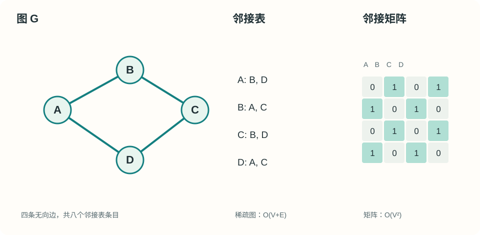
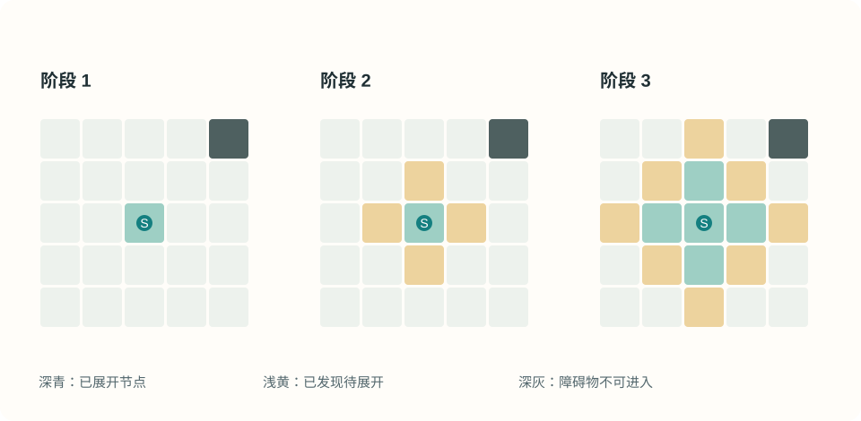
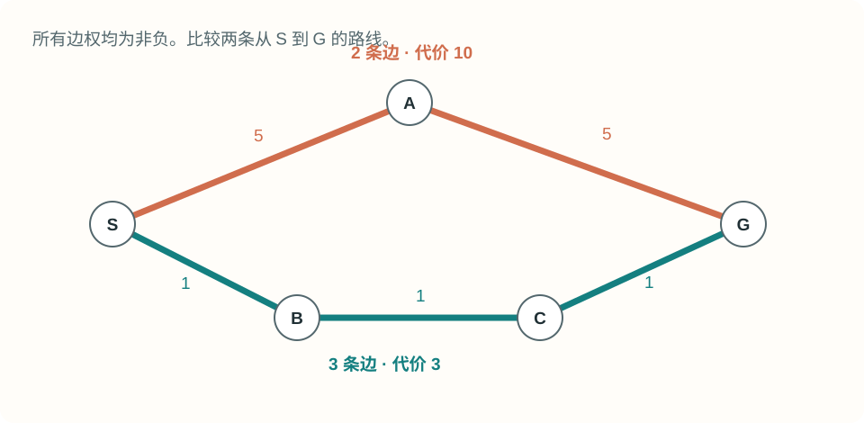

图论基础：从空间到搜索
地图、节点和边怎样连接起来？BFS 为什么按波纹展开？以及为什么“最少步”不等于“最低代价”？用可推演的图与代码回答这三个问题。
为什么要把地图变成图
迷宫或停车场首先是几何空间，而搜索算法处理的是“从哪些状态能到哪些状态”。我们可以将每个合法栅格作为顶点，把机器人允许的一步运动作为边，得到图 G=(V,E)。其中 V 是状态集合，E 是合法转移集合。
四邻域图只允许上下左右移动；八邻域图额外增加四条对角边，但要明确对角线是否会从两堵墙的拐角处穿过。对汽车、机械臂或动态系统，顶点也可以包含姿态、速度或时间——不能因为用了图就把运动约束自动忽略。
最容易被忽略的事情：构建边时做出的碰撞判断，与后续搜索选择什么算法一样重要。如果图中包含物理不可行的边，找到“最短路”也没有实际意义。
邻接表与邻接矩阵
图的常见两种存储形式是邻接表和邻接矩阵。邻接表为每个顶点保存可达邻居及可选的代价，空间通常为 O(V+E)；邻接矩阵需要 O(V²) 的表格存储，但查找特定边是否存在可在 O(1) 时间完成。
GRAPH SEARCH · 03

在稀疏栅格、道路网络或 PRM 的连接图中，邻接表通常更节省空间。若要表示不同移动代价，边 (u,v) 还需保存权重 w(u,v)；仅存邻居名字不足以表达加权最短路问题。
BFS 与 DFS 究竟差在哪
BFS 使用先进先出的队列，将距离起点 0、1、2、… 条边的顶点逐层扩展。只要图无权或所有边代价相同，第一次发现一个顶点就已经找到最少边数路径。DFS 使用栈或递归沿着单一分支深入，适合可达性、连通性与回溯问题，但第一个找到的目标路径未必是最少边数路径。
GRAPH SEARCH · 03

二者在邻接表表示下通常都以 O(V+E) 时间遍历可达图；差异主要在搜索顺序、找到路径的性质及使用的临时存储。这里的 V 和 E 指已建成图的规模，不包括传感器建图与碰撞检测成本。
亲手走一遍队列
下面的 9×9 网格有固定障碍，S 为起点、G 为终点。点击“下一次展开”，观察一个队列步骤如何改变“已扩展”“待探索”与最终回溯的最短路径。示例仅采用四邻域、单位边代价，障碍与起终点位置固定。
初始状态：起点已入队。启用 JavaScript 后可逐步模拟 BFS。
图例：深灰＝障碍；浅青＝已扩展；浅黄＝待探索；陶红＝回溯路径。按钮使用键盘也可操作。
有一个重要细节：节点入队时标记 visited，而不是等到出队才标记，否则同一个节点会被多个前驱反复加入队列。找到 G 后，从 parent 映射逆向回溯至 S 就得到路径。
最少边数不等于最低代价
如果把转弯、地面坡度、风险或距离纳入每条边，边数最少的路径不一定成本最低。比较下图两个候选：S→A→G 只有 2 条边，但总代价为 5+5=10；S→B→C→G 有 3 条边，总代价却只有 1+1+1=3。
GRAPH SEARCH · 03

同样地，DFS 在无权图上不保证最短，BFS 在带权图上也不能保证最小权重和。若边权允许负数，Dijkstra 的常见正确性假设不再成立，需要重新选择算法并检查负环等条件。
运行一个最小 BFS
下面实现使用邻接表、队列和父节点映射；对重复的相邻状态只入队一次。运行环境 Python 3.10+，不需要第三方依赖。
from collections import deque
def bfs(graph, start, goal):
"""无权图 BFS；同一起点到终点的路径，边数最少。"""
parent = {start: None}
frontier = deque([start])
while frontier:
u = frontier.popleft()
if u == goal:
path = []
while u is not None:
path.append(u)
u = parent[u]
return path[::-1]
for v in graph.get(u, ()):
if v not in parent:
parent[v] = u # 入队时标记，防止重复入队
frontier.append(v)
return None
g = {"S": ["A", "B"], "A": ["G"], "B": ["C"],
"C": ["G"], "G": []}
assert bfs(g, "S", "G") == ["S", "A", "G"]
assert bfs(g, "G", "S") is None # 这是有向图
print(bfs(g, "S", "G"))断言中的第一个期望路径依赖 g["S"] 的邻居遍历顺序：如果改成先 B 后 A，BFS 仍遵循最少边数保证，但在多条同长度路径存在时返回结果可能不同。第二个断言验证了有向边无法逆向通行。
边界、复杂度与工程条件
- 将真实地图离散成有限节点，会引入分辨率误差；路径连线仍需做连续几何检查。
- 图可能是有向的：上坡、单行道、非完整运动原语都可能使一条边不允许反向走。
- 对于超大地图，存储全部显式邻接表可能浪费内存，可按需计算邻居。
- 搜索复杂度不包括地图更新、传感器同步、路径后处理与执行反馈。
现在可以把问题分成两个干净的层次：先决定图代表什么，再根据边代价和性能要求选择搜索策略。